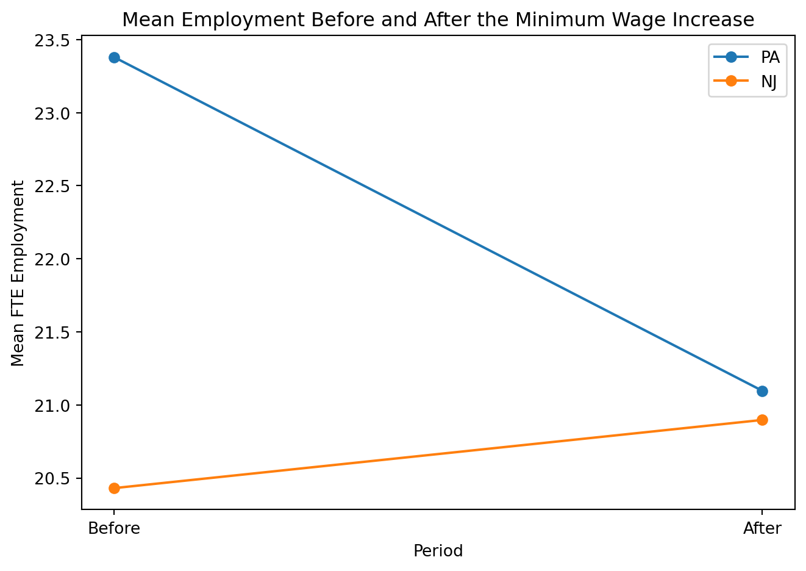

Minimum Wages and Employment: A Case Study of the Fast-Food Industry in New Jersey and Pennsylvania
Author
Shalini Harwalkar
Published
April 20, 2026
Introduction
This post replicates part of Card and Krueger (1994), which studies whether New Jersey’s 1992 minimum wage increase reduced employment in fast-food restaurants relative to nearby Pennsylvania. The paper is a classic difference-in-differences design: New Jersey is the treated group, Pennsylvania is the comparison group, and employment is observed before and after the policy change. :contentReferenceoaicite:1
I do three things here. First, I load and clean the original data. Second, I replicate the main difference-in-differences result using full-time-equivalent employment. Third, I add a graph of mean employment before and after the policy change. The original data archive contains survey data for 410 restaurants, and the public replication script I am following computes FTE as full-time workers plus managers plus half of part-time workers. :contentReferenceoaicite:2
Load the Data
Code
import pandas as pdimport numpy as npimport requestsimport zipfilefrom io import BytesIO, TextIOWrapperzip_url ="https://davidcard.berkeley.edu/data_sets/njmin.zip"r = requests.get(zip_url, timeout=60)r.raise_for_status()z = zipfile.ZipFile(BytesIO(r.content))# read raw data exactly as whitespace-separated textdf = pd.read_csv( z.open("public.dat"), sep=r"\s+", engine="python", header=None).apply(lambda s: pd.to_numeric(s, errors="coerce"))# read column names from codebook using the same line slices used in a public replicationcodebook_lines = [line for line in TextIOWrapper(z.open("codebook"), encoding="cp437")]codes = codebook_lines[7:11] + codebook_lines[13:19] + codebook_lines[21:38] + codebook_lines[40:59]cols = [line.strip().split()[0].lower() for line in codes]df.columns = colsprint("Shape:", df.shape)print("\nFirst 20 columns:")print(df.columns.tolist()[:20])df.head()
In this regression, the coefficient on state:post is the DiD estimate. This is the regression version of the same before-versus-after comparison shown in the group means table. The public Python replication I used also builds the analysis around FTE before and after, then estimates DiD-style models using New Jersey, time, and their interaction.
Additional Analysis: Graph
Code
import matplotlib.pyplot as pltplot_df = ( long_df .groupby(["state_label", "post"], as_index=False) .agg(mean_employment=("employment", "mean")))plot_df["period"] = plot_df["post"].map({0: "Before", 1: "After"})for state_name in ["PA", "NJ"]: sub = plot_df[plot_df["state_label"] == state_name] plt.plot(sub["period"], sub["mean_employment"], marker="o", label=state_name)plt.xlabel("Period")plt.ylabel("Mean FTE Employment")plt.title("Mean Employment Before and After the Minimum Wage Increase")plt.legend()plt.tight_layout()plt.show()

The graph gives the same intuition visually. If the New Jersey line does not fall relative to the Pennsylvania line, that supports the paper’s result.
Conclusion
This replication uses the original Card and Krueger data archive, constructs full-time-equivalent employment as empft + 0.5*emppt + nmgrs, and estimates the treatment effect using a simple difference-in-differences design. That setup follows the same core logic used in recent public replications of the paper.
The main quantity of interest is the relative change in employment in New Jersey compared with Pennsylvania. The group means, the DiD estimate, and the regression coefficient on the interaction term all speak to the same question: whether the minimum wage increase reduced employment. Based on Card and Krueger’s original argument, a non-negative estimate would support their conclusion that employment did not fall in New Jersey relative to Pennsylvania.